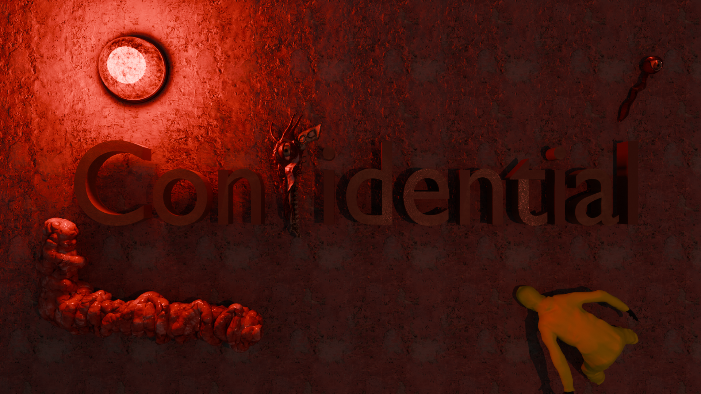

RESUME DE LA MISSION
Vous faites partie d'une des entreprises concurrentes de SCP, votre but : dérober le
SCP_032_FR et repartir avec.
Pour cela, vous vous rendrez dans un bâtiment scientifique militarisé et abandonné. Y entrer s'avère
assez simple, mais qui sait ce qui vous attend à la sortie.

INFILTRATION COMPLEXE
ARME SCP-032
- > Balistique Sanguine : L'arme est le SCP 032 qui tire du sang avec des particules. Détection de collision intégrée pour faire apparaître des "decal materials" de sang.
- > Rechargement à Risque : L'arme a seulement 2 balles et se recharge ensuite grâce à votre propre sang (PV), créant une tension constante entre attaque et survie.
- > Dialogue Interactif : L'arme a plusieurs lignes de dialogue activables à différents endroits du complexe.
 ARME VIVANTE
ARME VIVANTE
SYSTEMES IMMERSIFS
- > Post-Process Dynamique : Chaque rechargement de l'arme donne différents effets négatifs visuels répartis sur des paliers (ex: mort au 5ème rechargement). Tous les effets sont modifiables via des variables (durée, force).
- > Environnement Organique : SplineLines placées dans l'éditeur et reliées à un œil central. Utilisation de Spline Meshes avec effet de respiration lorsqu'elles sont activées.
- > Accès Sécurisés (Portes) : Chaque porte a un lecteur de badge et un niveau d'accès. Si la carte a le bon niveau, la porte s'ouvre (lumière verte), sinon elle reste fermée (lumière rouge).
 HALLUCINATIONS VISUELLES
HALLUCINATIONS VISUELLES
OUTILS & EDITOR
Développement d'outils Editor Utility pour placer facilement les "SplineLines" — des câbles organiques reliés au décor. Gestion automatique des animations de respiration et du mapping de texture.
 SPLINES ORGANIQUES
SPLINES ORGANIQUES